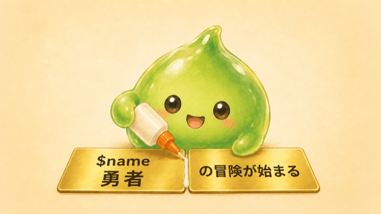
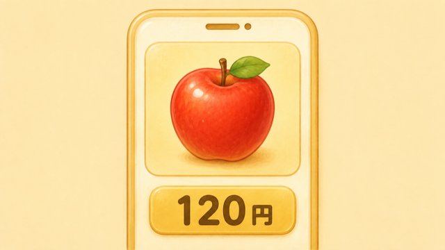

A01 はじまりの村 — 名乗りを上げよ

- 画面に文字を出す（
echo） - 名前をつけて値を覚えさせる（変数）
- 文字を .（ドット） でつなげて、自分だけの物語を表示する
つかいかた
コードのすぐ下にある ▶ 実行 ボタンを押すと、プログラムが動いて、ボタンのすぐ下に結果が出ます。すべてのコードに ▶ 実行 ボタンが付いています。まずは押してみましょう。
ステップ1 — 画面に文字を出す（echo）
echo（エコー）は「画面に出す」命令です。まずは下を ▶ 実行 して、何が出るか見てみましょう。
" "（ダブルクオート）で囲む;（セミコロン）を付ける（文の終わりの「。」のようなもの。忘れると動きません）// から行末はメモ（コメント）。コンピュータは読み飛ばしますクエスト：" " の中の ここを書きかえる を消して、旅に出る と打ってみよう。採点は文字の中身が同じかどうかで決まります（文の最初と最後の空白は気にしません）。
🧙 ミラ：明るい入力欄（ソースコードを書く所）の文字は、書き換えられます。書き換えたら ▶ 実行。元に戻すときは ↺ 最初に戻す（書いた内容は消えてやり直せます）。「答えを見る」は、一度 ▶ 実行 してから出てきます。
ステップ2 — 名前をつけて覚えさせる（変数）
📝 echo は自動で改行しません。だから2つの文が、そのままつながって出ます。
$name … 変数は $（ドル）で始める。これが「覚えさせる名前」= … 右にあるものを、左の名前に入れる合図（読むときは右→左）。「"勇者" を $name に入れる」。算数のイコール（左右が等しい）ではありません.（ドット） … 言葉と言葉をのりでくっつけるイメージ。「アレン」＋「の冒険」→「アレンの冒険」。小数点や句点「。」とは別物です= は「一度 名前をつけて入れたら、どこでも何度でも使える」。
. は、言葉と言葉をのりでくっつけるイメージ。まずは値を変えてみよう：下の $name の "勇者" を、あなたの好きな名前に書き換えて ▶ 実行。表示が変わります。（この問題は採点なし。正解マークは出ませんが、下に文字が出ればOK！）
（ここからは、例として名前を アレン として進めます。）
クエスト：$name に アレン を入れて、アレンの冒険が始まる！ と表示しよう。
ステップ3 — 数とステータス、そして連結
名前のような文字は " " で囲みますが、HPやレベルのような数は囲みません。覚えるのはこれだけ：文字は囲む、数は囲まない。
📝 文の終わりに \n を付けると、そこで改行できます（だから上は2行に分かれて出ます）。
「\」（バックスラッシュ）の打ち方：Windows は \ キー（キーボード右下の「ろ」／「¥」キー）。Mac は option（⌥）＋¥（画面に「¥」と出ても、コードでは同じ意味です）。
$level の中身を入れ替え。名札はそのまま、中身だけ 1 → 5。. はいくつでもつなげられる（2個でも4個でも同じ）" HP" のように、" " の中にはスペースや記号もそのまま入れられるクエスト：下のコードの最後の $name を $hp に直して、アレン HP20 と表示しよう。（スペースや記号はもう入っています。直すのは変数1つだけ！）
ここからは現実のアプリの話。変数はゲームだけのものではありません。買い物アプリでも、商品名や値段を変数に覚えさせて使います。題材が違うだけで、仕組みはまったく同じです。

まとめ
echo "文字";（最後に ;）$名前 = 値; で覚えさせ、何度でも呼び出せる・あとで変えられる（文字は " "、数はそのまま）.（ドット）\n は改行（行を変える合図）.）・改行（\n） を全部つかうよ。クリアすれば、きみは変数マスターだ！
ボス戦（仕上げのクエスト）：$name = "アレン" と $level = 5 を使って、次の2行を echo しよう。
🎯 出したい結果（この2行）：名前：アレンlevel：5
※ ： は全角コロン。行を変えるところは \n を使う。